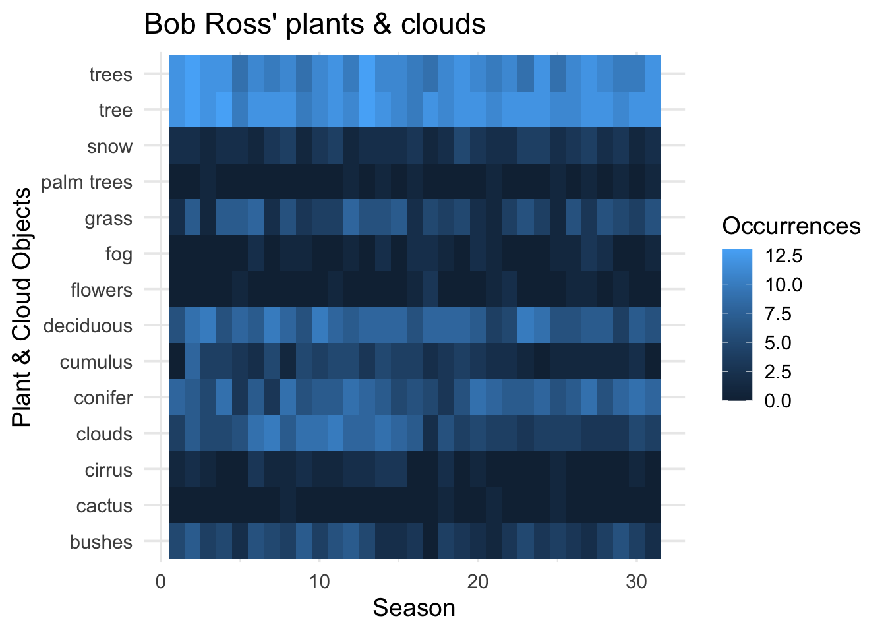

install.packages("ggplot2movies")
library(ggplot2movies)
library(ggplot2)COMPARING AMOUNTS
Comparing Counts and Summaries with ggplot2 (and friends!)
GROUPED COLUMN GRAPHS
Note
When would I use this graph?
Grouped column graphs display calculated ‘summary’ values for a numerical variable across the levels of a second categorical variable. Color is used to make comparisons and distinguish between groups (or levels) of the categorical variable.
In ggplot2, we can create grouped column graphs with geom_co().
PACKAGES:
Install packages.
DATA:
Description of data
movies_grp_col <- ggplot2movies::movies |>
filter(!is.na(budget) & mpaa != "") |>
select(budget, mpaa)
glimpse(movies_grp_col)Rows: 1,813
Columns: 2
$ budget <int> 23000000, 16000000, 1100000, 37000000, 85000000, 42000000, 4000…
$ mpaa <chr> "PG-13", "PG-13", "R", "PG-13", "R", "R", "PG", "PG-13", "R", "…CODE:
Create the labels
Map mpaa to x and budget to y
Inside geom_col(), map mpaa to fill and remove the legend with show.legend = FALSE
Format the y axis with scale_y_continuous() by setting labels to scales::dollar
labs_col <- labs(
title = "IMDB movie information/user ratings",
x = "MPAA rating",
y = "Total budget in US dollars")
ggp2_col <- ggplot(data = movies_grp_col,
aes(x = mpaa,
y = budget)) +
geom_col(aes(fill = mpaa),
show.legend = FALSE) +
scale_y_continuous(labels = scales::dollar)
ggp2_col +
labs_colGRAPH:

SUMMARY:
If we pass a categorical variable to the x (like mpaa) and a continuous variable to y (like budget), geom_col() will calculate the sum() of y by levels of x
ggplot2movies::movies |>
filter(!is.na(budget) & mpaa != "") |>
select(budget, mpaa) |>
group_by(mpaa) |>
summarise(tot_bud = sum(budget, na.rm = TRUE),
tot_bud = scales::dollar(tot_bud)) |>
ungroup() |>
select(MPAA = mpaa,
`Total budget` = tot_bud)We can see the underlying summary of budget using dplyr’s group_by() and summarise() functions.
| MPAA | Total budget |
|---|---|
| NC-17 | $48,637,000 |
| PG | $7,728,300,000 |
| PG-13 | $21,955,784,000 |
| R | $21,078,510,606 |
SUMMARIZED COLUMN GRAPHS
Note
When would I use this graph?
geom_col() allows us to display any summary statistic we can calculate for a numerical variable.
PACKAGES:
For example, the code below summarizes the average budget grouped by levels of mpaa rating in the movies dataset.
install.packages("ggplot2movies")
library(ggplot2movies)
library(ggplot2)DATA:
Description of data
movies_sum_col <- ggplot2movies::movies |>
filter(!is.na(budget) & mpaa != "") |>
select(budget, mpaa) |>
group_by(mpaa) |>
summarise(avg_budget = mean(budget, na.rm = TRUE)) |>
ungroup()
glimpse(movies_sum_col)Rows: 4
Columns: 2
$ mpaa <chr> "NC-17", "PG", "PG-13", "R"
$ avg_budget <dbl> 6948143, 36454245, 41426008, 19810630CODE:
Create the labels
Map mpaa to the x and avg_budget to the y
Map mpaa to fill inside the aes() of geom_col() and remove the legend with show.lengend = FALSE
Format the y axis with scale_y_continuous() by setting labels to scales::dollar
labs_col <- labs(
title = "IMDB movie information/user ratings",
x = "MPAA rating",
y = "Average budget in US dollars")
ggp2_col <- ggplot(data = movies_sum_col,
aes(x = mpaa,
y = avg_budget)) +
geom_col(aes(fill = mpaa),
show.legend = FALSE) +
scale_y_continuous(labels = scales::dollar)
ggp2_col +
labs_colGRAPH:

OVERLAPPING BAR GRAPHS
Note
When would I use this graph?
We can also use bars to look at numeric and categorical variables using geom_bar() by setting fill argument
This results in bars differentiated by color and ‘stacked’ on top of each other.
PACKAGES:
Install packages.
install.packages("palmerpenguins")
library(palmerpenguins)
library(ggplot2)DATA:
Remove missing sex from penguins and filter to only "Adelie" penguins.
penguins_ovrlp <- filter(penguins,
!is.na(sex) & species == "Adelie")
glimpse(penguins_ovrlp)Rows: 146
Columns: 8
$ species <fct> Adelie, Adelie, Adelie, Adelie, Adelie, Adelie, Adel…
$ island <fct> Torgersen, Torgersen, Torgersen, Torgersen, Torgerse…
$ bill_length_mm <dbl> 39.1, 39.5, 40.3, 36.7, 39.3, 38.9, 39.2, 41.1, 38.6…
$ bill_depth_mm <dbl> 18.7, 17.4, 18.0, 19.3, 20.6, 17.8, 19.6, 17.6, 21.2…
$ flipper_length_mm <int> 181, 186, 195, 193, 190, 181, 195, 182, 191, 198, 18…
$ body_mass_g <int> 3750, 3800, 3250, 3450, 3650, 3625, 4675, 3200, 3800…
$ sex <fct> male, female, female, female, male, female, male, fe…
$ year <int> 2007, 2007, 2007, 2007, 2007, 2007, 2007, 2007, 2007…CODE:
Create the labels
Map flipper_length_mm to the x and sex to fill
Add the geom_bar() layer
labs_bar_ovrlp <- labs(
title = "Adelie adult foraging penguins",
x = "Flipper length (millimeters)",
fill = "Sex")
ggp2_bar_ovrlp <- ggplot(data = penguins_ovrlp,
aes(x = flipper_length_mm, fill = sex)) +
geom_bar()
ggp2_bar_ovrlp +
labs_bar_ovrlpGRAPH:

SIDE-TO-SIDE BAR GRAPHS
Note
When would I use this graph?
To compare amounts using bar size (length or height) in a side-to-side display, we can set the position in geom_bar() to "dodge" or "dodge2"
PACKAGES:
Install packages.
install.packages("palmerpenguins")
library(palmerpenguins)
library(ggplot2)DATA:
Remove any missing values from sex and species in the penguins data.
penguins_dodge <- filter(penguins,
!is.na(sex) & !is.na(species))
glimpse(penguins_dodge)Rows: 333
Columns: 8
$ species <fct> Adelie, Adelie, Adelie, Adelie, Adelie, Adelie, Adel…
$ island <fct> Torgersen, Torgersen, Torgersen, Torgersen, Torgerse…
$ bill_length_mm <dbl> 39.1, 39.5, 40.3, 36.7, 39.3, 38.9, 39.2, 41.1, 38.6…
$ bill_depth_mm <dbl> 18.7, 17.4, 18.0, 19.3, 20.6, 17.8, 19.6, 17.6, 21.2…
$ flipper_length_mm <int> 181, 186, 195, 193, 190, 181, 195, 182, 191, 198, 18…
$ body_mass_g <int> 3750, 3800, 3250, 3450, 3650, 3625, 4675, 3200, 3800…
$ sex <fct> male, female, female, female, male, female, male, fe…
$ year <int> 2007, 2007, 2007, 2007, 2007, 2007, 2007, 2007, 2007…CODE:
Create the labels
Map species to the x and sex to fill
Inside the geom_bar() function, set position to "dodge"
labs_bar_dodge <- labs(
title = "Adult foraging penguins",
subtitle = "position = 'dodge'",
x = "Penguin Species",
fill = "Penguin Sex")
ggp2_bar_dodge <- ggplot(data = penguins_dodge,
aes(x = species,
fill = sex)) +
geom_bar(position = "dodge")
ggp2_bar_dodge +
labs_bar_dodgeGRAPH:

DODGE2 BAR GRAPHS
Note
When would I use this graph?
"dodge2" preserves the total width of the elements and works without a grouping variable in a layer.
PACKAGES:
Install packages.
install.packages("palmerpenguins")
library(palmerpenguins)
library(ggplot2)DATA:
Remove any missing values from sex and species in the penguins data.
penguins_dodge2 <- filter(penguins,
!is.na(sex) & !is.na(species))
glimpse(penguins_dodge2)Rows: 333
Columns: 8
$ species <fct> Adelie, Adelie, Adelie, Adelie, Adelie, Adelie, Adel…
$ island <fct> Torgersen, Torgersen, Torgersen, Torgersen, Torgerse…
$ bill_length_mm <dbl> 39.1, 39.5, 40.3, 36.7, 39.3, 38.9, 39.2, 41.1, 38.6…
$ bill_depth_mm <dbl> 18.7, 17.4, 18.0, 19.3, 20.6, 17.8, 19.6, 17.6, 21.2…
$ flipper_length_mm <int> 181, 186, 195, 193, 190, 181, 195, 182, 191, 198, 18…
$ body_mass_g <int> 3750, 3800, 3250, 3450, 3650, 3625, 4675, 3200, 3800…
$ sex <fct> male, female, female, female, male, female, male, fe…
$ year <int> 2007, 2007, 2007, 2007, 2007, 2007, 2007, 2007, 2007…CODE:
Create the labels
Map species to x and sex to fill
Inside geom_bar(), set position to "dodge2"
labs_bar_dodge2 <- labs(
title = "Adelie adult foraging penguins",
subtitle = "position = 'dodge2'",
x = "Species",
fill = "Penguin Sex")
ggp2_bar_dodge2 <- ggplot(data = penguins_dodge2,
aes(x = species,
fill = sex)) +
geom_bar(position = "dodge2")
ggp2_bar_dodge2 +
labs_bar_dodge2GRAPH:

WAFFLE CHART
Note
When would I use this graph?
Waffle charts use color to display the levels that make up the values in a categorical variable. The counts for each level are divided into separate colors into a square or grid display.
We’ll build a waffle chart using the ggwaffle package.
PACKAGES:
Install packages.
devtools::install_github("liamgilbey/ggwaffle")
library(ggwaffle)
install.packages("palmerpenguins")
library(palmerpenguins)
library(ggplot2)DATA:
Waffle charts require a special data transformation with ggwaffle::waffle_iron()
Set the group argument in ggwaffle::aes_d() as the categorical variable you want to see the relative counts for:
penguins <- palmerpenguins::penguins
penguins <- dplyr::mutate(penguins,
species = as.character(species))
waffle_peng <- ggwaffle::waffle_iron(penguins,
aes_d(group = species))
glimpse(waffle_peng)Rows: 344
Columns: 3
$ y <int> 1, 2, 3, 4, 5, 6, 7, 8, 1, 2, 3, 4, 5, 6, 7, 8, 1, 2, 3, 4, 5, 6…
$ x <int> 1, 1, 1, 1, 1, 1, 1, 1, 2, 2, 2, 2, 2, 2, 2, 2, 3, 3, 3, 3, 3, 3…
$ group <chr> "Adelie", "Adelie", "Adelie", "Adelie", "Adelie", "Adelie", "Ade…CODE:
Create the labels
Map the x and y to the x and y axes
Map group to fill
Add ggwaffle::geom_waffle()
Add ggwaffle::theme_waffle()
labs_waffle <- labs(
title = "Waffle chart of palmer penguin species",
x = "", y = "", fill = "Species")
ggp2_waffle <- ggplot(data = waffle_peng,
aes(x = x,
y = y,
fill = group)) +
ggwaffle::geom_waffle()
ggp2_waffle +
labs_waffle +
ggwaffle::theme_waffle()GRAPH:

HEATMAPS
Note
When would I use this graph?
Heatmaps display quantitative values across an intersection of two categorical (or discrete) variables.
The intersecting cells contain variations of color saturation (i.e., the grade of purity or vividness) to represent the numerical values between groups.
PACKAGES:
Install packages.
install.packages("fivethirtyeight")
library(fivethirtyeight)
library(ggplot2)DATA:
For the heatmap, we’re going to re-structure and filter the bob_ross data from the fivethirtyeight package.
heatmap_ross <- fivethirtyeight::bob_ross |>
pivot_longer(-c(episode, season,
episode_num, title),
names_to = "object",
values_to = "present") |>
mutate(present = as.logical(present),
object = str_replace_all(object, "_", " ")) |>
arrange(episode, object) |>
filter(object %in% c('conifer', 'trees',
'tree', 'snow', 'palm trees', 'grass',
'flowers', 'cactus', 'bushes', 'cirrus',
'cumulus', 'deciduous', 'clouds', 'fog')) |>
group_by(season, object) |>
summarise(occurrences = sum(present)) |>
ungroup()`summarise()` has grouped output by 'season'. You can override using the
`.groups` argument.glimpse(heatmap_ross)Rows: 434
Columns: 3
$ season <dbl> 1, 1, 1, 1, 1, 1, 1, 1, 1, 1, 1, 1, 1, 1, 2, 2, 2, 2, 2, 2…
$ object <chr> "bushes", "cactus", "cirrus", "clouds", "conifer", "cumulu…
$ occurrences <int> 5, 0, 1, 4, 8, 0, 6, 0, 0, 2, 0, 2, 12, 12, 7, 0, 2, 7, 7,…CODE:
Create the labels
Assign season to x, object to y, and occurrences to fill
Add the geom_tile()
labs_heatmap_tile <- labs(
title = "Bob Ross' plants & clouds",
x = "Season",
y = "Plant & Cloud Objects",
fill = "Occurrences")
ggp2_heatmap_tile <- ggplot(data = heatmap_ross,
aes(x = season,
y = object,
fill = occurrences)) +
geom_tile()
ggp2_heatmap_tile +
labs_heatmap_tileGRAPH:

MORE HEATMAPS
Note
When would I use this graph?
In addition to geom_tile(), heatmaps can also be created with the geom_raster() function.
PACKAGES:
Install packages.
install.packages("fivethirtyeight")
library(fivethirtyeight)
library(ggplot2)DATA:
We’re going to use the same re-structured version of the fivethirtyeight::bob_ross data, heatmap_ross
glimpse(heatmap_ross)Rows: 434
Columns: 3
$ season <dbl> 1, 1, 1, 1, 1, 1, 1, 1, 1, 1, 1, 1, 1, 1, 2, 2, 2, 2, 2, 2…
$ object <chr> "bushes", "cactus", "cirrus", "clouds", "conifer", "cumulu…
$ occurrences <int> 5, 0, 1, 4, 8, 0, 6, 0, 0, 2, 0, 2, 12, 12, 7, 0, 2, 7, 7,…CODE:
Create the labels
Assign season to x, object to y, and occurrences to fill
Add the geom_raster()
labs_heatmap_raster <- labs(
title = "Bob Ross' plants & clouds",
x = "Season",
y = "Plant/Cloud Object",
fill = "Occurrences")
ggp2_heatmap_raster <- ggplot(data = heatmap_ross,
aes(x = season,
y = object,
fill = occurrences)) +
geom_raster()
ggp2_heatmap_raster +
labs_heatmap_rasterGRAPH: